Dyżur całodobowy
Jesteśmy dostępni przez całą dobę, również w weekendy.
Specjalistyczna ambulatoryjna opieka paliatywna
Wspieramy ciężko chore osoby i ich bliskich, oferując wiedzę, czas i ludzkie podejście. Naszym celem jest łagodzenie objawów, dawanie poczucia bezpieczeństwa i zachowanie jakości życia.
Czym się zajmujemy
SAPV uzupełnia opiekę lekarza rodzinnego, pielęgniarską i hospicyjną, gdy objawy są szczególnie nasilone lub szybko się zmieniają.
Jesteśmy dostępni przez całą dobę, również w weekendy.
Na przykład bólu, duszności, lęku, niepokoju, nudności lub wymiotów.
Wspieramy pacjentów i bliskich przy podejmowaniu decyzji oraz w sytuacjach kryzysowych.
Koordynujemy leki, środki pomocnicze i zaangażowane placówki.
Pomagamy w miarę możliwości uniknąć obciążających pobytów w szpitalu.
Współpracujemy z lekarzami rodzinnymi, opieką pielęgniarską, hospicjami i innymi specjalistami.
Jak ze sobą współpracujemy
Pacjent jest w centrum naszej uwagi. Słuchamy, wyjaśniamy w zrozumiały sposób i szanujemy osobiste decyzje, także wtedy, gdy dana osoba nie od razu korzysta z naszej propozycji.
Trudne sytuacje wymagają powagi, ale nie każda chwila musi być ciężka. Życzliwe słowo, odrobina humoru lub swobodna rozmowa mogą pomóc, jeśli odpowiada to wszystkim uczestnikom.
Kiedy SAPV może pomóc
Poniższe przykłady mają charakter orientacyjny. Decydujące są ocena lekarska, wymogi prawne i decyzja kasy chorych.
Ból mimo leczenia jest trudny do opanowania lub wyraźnie się zmienia.
Na przykład splątanie, lęk, niepokój, napady drgawek lub silne obciążenie emocjonalne.
Na przykład duszność, lęk przed uduszeniem, ucisk w klatce piersiowej lub poważne problemy z krążeniem.
Na przykład nudności, wymioty, niedrożność jelit, trudności w połykaniu lub ucisk spowodowany wodobrzuszem.
Na przykład otwarte, nieprzyjemnie pachnące, krwawiące lub wymagające złożonej pielęgnacji rany.
Na przykład trudności w oddawaniu moczu, krwawienia, przetoki lub ciężkie problemy z nerkami.
Na przykład silny świąd, zaburzenia metaboliczne lub uporczywa, uciążliwa czkawka.
Jak do nas trafić
Nasz zespół
Stały zespół tworzy osiem wyspecjalizowanych pielęgniarek i trzech lekarzy. Opiekę wspierają również inni lekarze, specjaliści i partnerzy. Wysokie kwalifikacje pielęgniarek pozwalają na krótkie drogi decyzyjne i płaską strukturę. Dla wielu pacjentów pielęgniarki są zaufanymi osobami kontaktowymi.
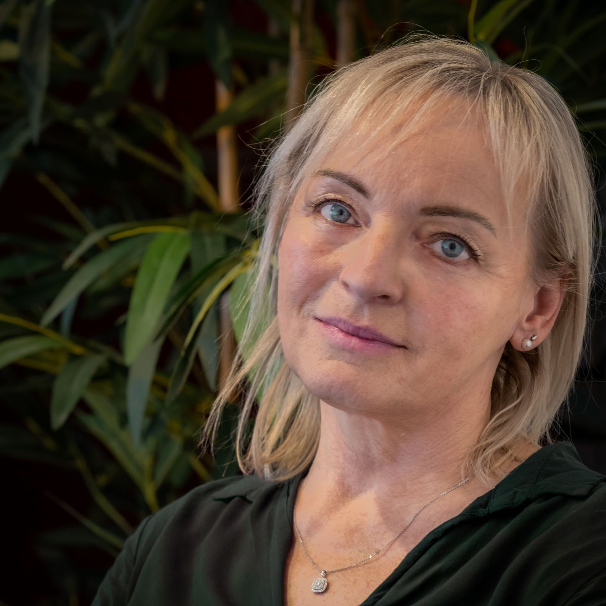
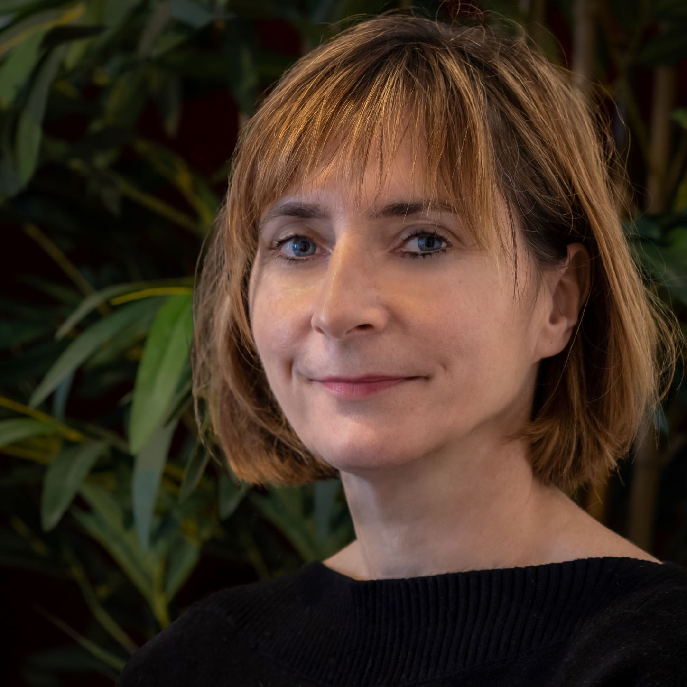
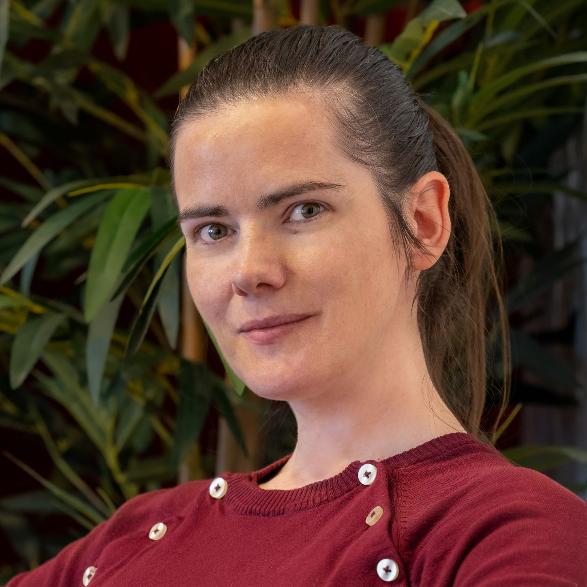
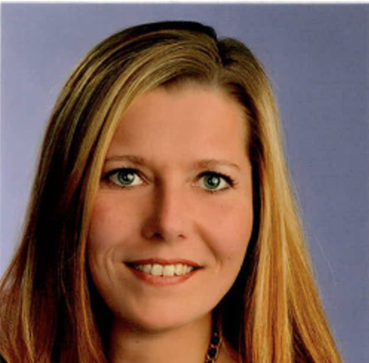
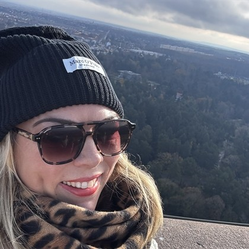
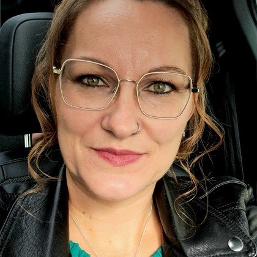
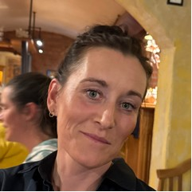
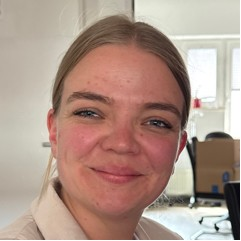
W zależności od grafiku może towarzyszyć Ci również inna osoba z zespołu. Dzięki temu stopniowo poznasz cały zespół, a być może także jeden z życzliwych pseudonimów, zawsze z szacunkiem i tylko wtedy, gdy wszystkim to odpowiada.
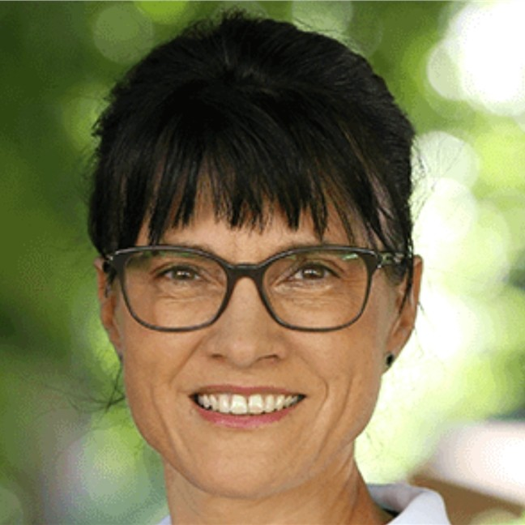
Specjalistka chorób wewnętrznych · Medycyna paliatywna · Medycyna społeczna · Geriatria · Rehabilitacja medyczna · Medycyna ratunkowa · Zarządzanie jakością w ochronie zdrowia
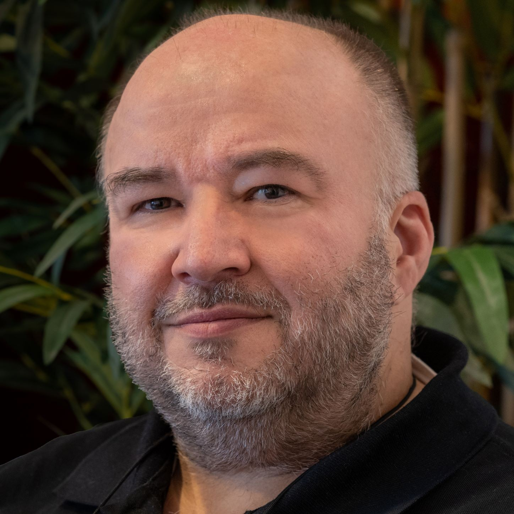
Specjalista medycyny rodzinnej · Medycyna paliatywna · Lekarz systemu ratownictwa medycznego · Medycyna podróży · Podpułkownik rezerwy
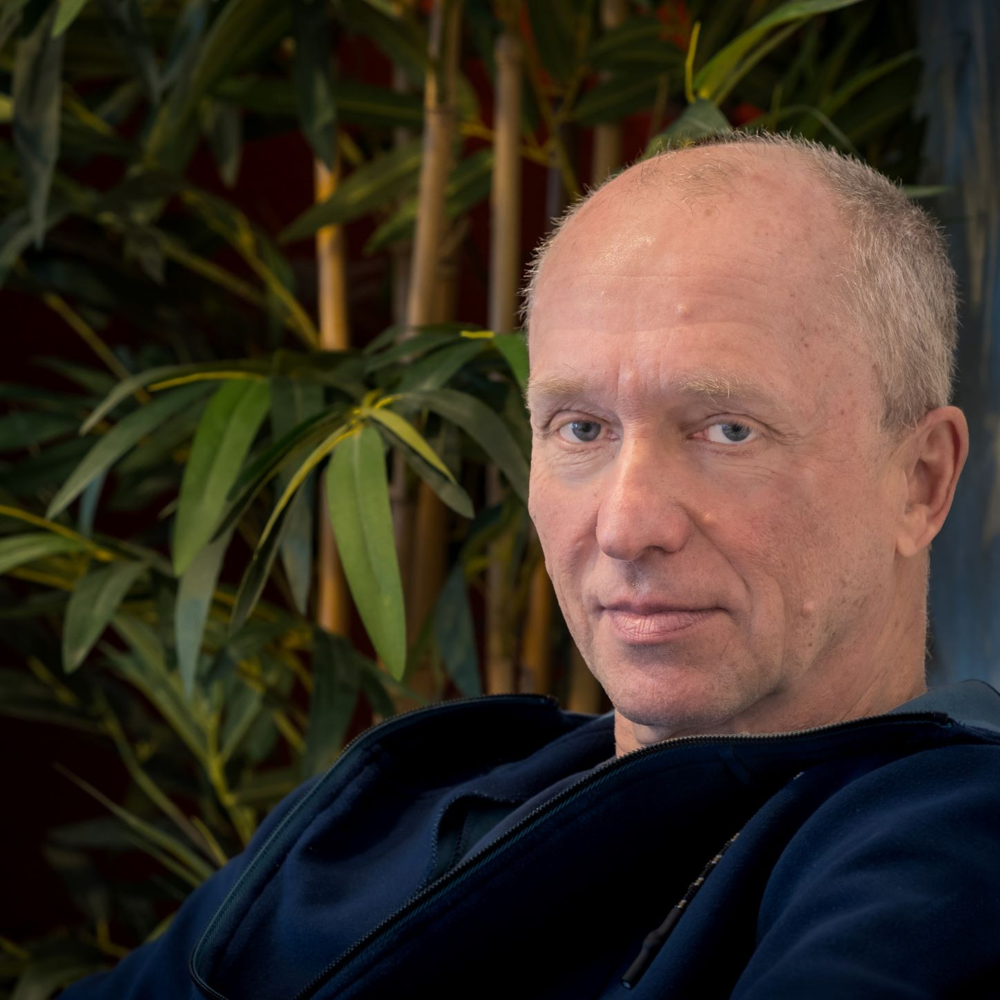
Specjalista medycyny rodzinnej · Medycyna paliatywna · Homeopatia · Medycyna naturalna · Terapia manualna · Medycyna pracy · Podstawowa opieka w leczeniu uzależnień · Podpułkownik w stanie spoczynku
Wspierają nas także lekarze w trakcie specjalizacji, lekarze współpracujący, specjaliści i usługodawcy ochrony zdrowia.
Dlaczego SAPV Friedland?
Wiele osób chce jak najdłużej pozostać w znanym otoczeniu. Nasz zespół pomaga pacjentom i bliskim zyskać poczucie bezpieczeństwa oraz zmniejszyć obciążenia. Wspólnie szukamy rozwiązań dopasowanych do indywidualnej sytuacji.
FAQ
Do SAPV mogą kwalifikować się osoby z nieuleczalną, postępującą chorobą, ograniczoną przewidywaną długością życia i szczególnie złożonym zapotrzebowaniem na opiekę. Każdy przypadek jest oceniany indywidualnie.
Nie. SAPV jest opieką ambulatoryjną wspierającą pobyt w znanym otoczeniu.
Nie. SAPV uzupełnia dotychczasową opiekę i współpracuje z zaangażowanymi specjalistami.
W przypadku zatwierdzonego świadczenia koszty SAPV dla osób z ustawowym ubezpieczeniem pokrywa kasa chorych.
Tak. Nasz całodobowy numer jest dostępny także w weekendy.
Prawo wyboru jest dla nas ważne. Konkretny zakres opieki i obszar działania należy uzgodnić z kasą chorych i wybranym zespołem.
Zadzwoń pod numer centralny. Poza godzinami pracy osobiste telefony służbowe są automatycznie przekierowywane do pielęgniarki pełniącej dyżur.
Praca w SAPV Friedland
Cenimy kompetencje, samodzielność, krótkie drogi decyzyjne i pełną szacunku współpracę. Szkolenia i praca zespołowa są dla nas elementem dobrej opieki paliatywnej.
Twoja opinia